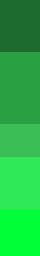
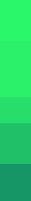

(Projetos selecionados)
portfólio.
-
(Descrição)
Projeto real, através de um design focado em credibilidade técnica e um formulário, conectando a empresa a transportadores de todo o Triângulo Mineiro.
Figma | HTML | CSS | JavaScript | PHP | PHPMailer
Ver projeto ↗(Cores)
(Tipografia)
MGIVPoppins
MGIVRoboto
InspeçãoPoppins
VeicularRoboto
-
(Descrição)
A Tecimalhas possui uma loja física em Uberlândia, no qual optei por realizar apenas o visual do site e uma página de formulário de dúvidas, assuntos e parcerias.
HTML | CSS | JavaScript | Node.js
Ver projeto ↗(Cores)


(Tipografia)
TeciPoppins
TeciRoboto
MalhasPoppins
MalhasRoboto
-
(Descrição)
Beyond - Praça Sérgio Pacheco, foi desenvolvida com o objetivo de apresentar uma proposta moderna, funcional e centrada na comunidade, valorizando um dos espaços públicos mais tradicionais da cidade.
HTML | CSS | JavaScript
Ver projeto ↗(Cores)

(Tipografia)
BePoppins
BeRoboto
BeyondPoppins
BeyondRoboto
-
(Descrição)
Transformando Dados em Decisões Estratégicas, voltado para Business Intelligence (BI), Governança e Arquitetura de Dados. Esse site foi criado 100% com ajuda de Inteligência Artificial, buscando a arquitetura de prompts.
Inteligência Artificial | Explorando Prompts
Ver projeto ↗ -
(Descrição)
Script automatizado para extração de dados de produtos em sites de vendas e processo de informações para estabelecer métricas comparativas. Um Price Scrapper completo e funcional.
Python | Excel
Ver projeto ↗